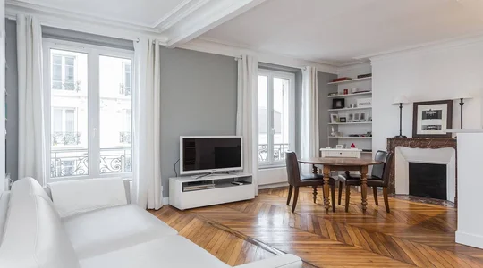

Rénovation complète Casablanca
Qu'il s'agisse de rongeurs, d'insectes ou d'oiseaux, tous les nuisibles transportent des maladies ou des bactéries transmissibles à l'homme. Les agents infectieux introduits dans vos installations par ces nuisibles rendent indispensable une désinfection efficace visant à éliminer ces foyers infectieux et à protéger vos installations et vos équipes. Les cafards par exemple peuvent transmettre des maladies comme :
Dès lors que votre habitation montre des premiers signes d'infestation, il nécessaire de faire appel à un exterminateur professionnel. Nous sommes à même d'intervenir dans votre logement pour un service de dératisation et extermination d'insectes. Outre son aspect hygiénique, les nuisibles comme les rats peuvent causer des dégâts très importants dans votre habitation en plus d'apporter des bactéries nocives pour votre santé.
la salmonellose ; la dysenterie ; la fièvre typhoïde ; la tuberculose ; l'hépatite ; des maladies parasitaires ; des infections fongiques ; la gastro-entérite.
Les rats sont connus pour véhiculer la maladie de Weil ou l'Escherichia coli et les pigeons pour transmettre la salmonellose et l'ornithose.

renovation complete
Pour les installations agricoles et agro-alimentaires, une contamination par ce type de pathologie peut être dévastatrice et avoir de graves conséquences sur la santé publique, sans parler de la perte de crédibilité et de chiffre d'affaires. Les hôpitaux, les cabinets médicaux, les pharmacies, des maisons de retraite, les crèches, les hôtels ou les restaurants, ne peuvent pas non plus se permettre de risquer d'infecter leurs patients et leurs clients. C'est pourquoi WINBEST DERATISATION, en complément de ses services anti nuisibles, vous propose son service de désinfection professionnelle .
Un nettoyage et une désinfection efficaces permettent de garantir la conformité de vos installations en matière d'hygiène et de sécurité et la prévention des maladies infectieuses. Tous nos produits sont utilisés en
les standards reconnus. Vous souhaitez en savoir plus sur notre service de désinfection ? Contactez WINBEST DERATISATION au +212 615 599 092 pour prendre rendez-vous ou écrivez-nous et un technicien prendra contact avec vous.
Société de renovation complete Casablanca
les standards reconnus. Vous souhaitez en savoir plus sur notre service de désinfection ? Contactez WINBEST DERATISATION au +212 615 599 092 pour prendre rendez-vous ou écrivez-nous et un technicien prendra contact avec vous.